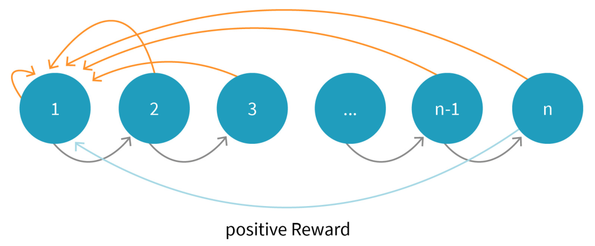
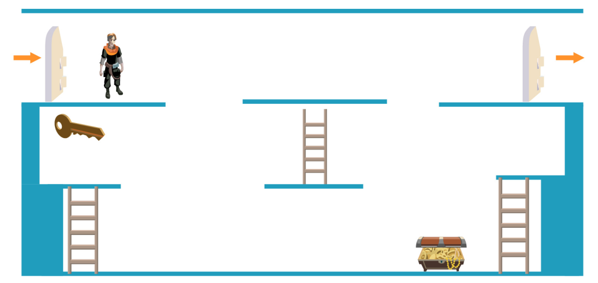

DLMAIRIL01 - Source-derived printable review sheet
Condensed from the same learning note. No additional teaching topics or official examination questions. Formulas and fonts render offline.
Sparse delayed rewards make useful feedback difficult to obtain; goal-conditioned values represent different tasks, and hierarchical learning separates selecting goals from acting to accomplish them.
| Term | Meaning |
|---|---|
| Sparse reward | Nonzero task reward is rare. |
| Delayed reward | Feedback appears only after a long action sequence. |
| General value function | A state's value for a particular goal. |
| Universal value function | One parameterized value mapping conditioned on state and goal. |
| Demon | A goal-question-specific sub-agent in the source Horde architecture. |
| Meta-controller | Selects a goal. |
| Controller | Selects actions to attain that goal. |
Goal-specific value: . Universal approximation: .
Hierarchical DQN cycle: choose a goal with the meta-controller, act toward it with the controller, then choose the next goal after completion.
In the source game's key-and-door sequence, a controller learns actions that reach the key. The meta-controller must select this goal before the door-opening goal, because reaching the locked door without a key does not advance the level.
Study these with the detailed explanation in the linked Obsidian note.


Answer before expanding. Open the answers before printing to include them.
A long correct action sequence is required before reward, and a wrong decision restarts the episode.
The value of state s while pursuing goal g.
Learn separate goal-oriented questions about the environment.
One parameterized function accepts both a state and a goal.
The next goal to pursue.
Actions that achieve the selected goal.
Goals can depend on one another and require a particular order.
Learning note: 04_unit_4_q_learning/05_delayed_sparse_rewards_and_hierarchical_learning.
Course book pp. 156-158. Printed page + 2 = PDF viewer page. Personal-study use.